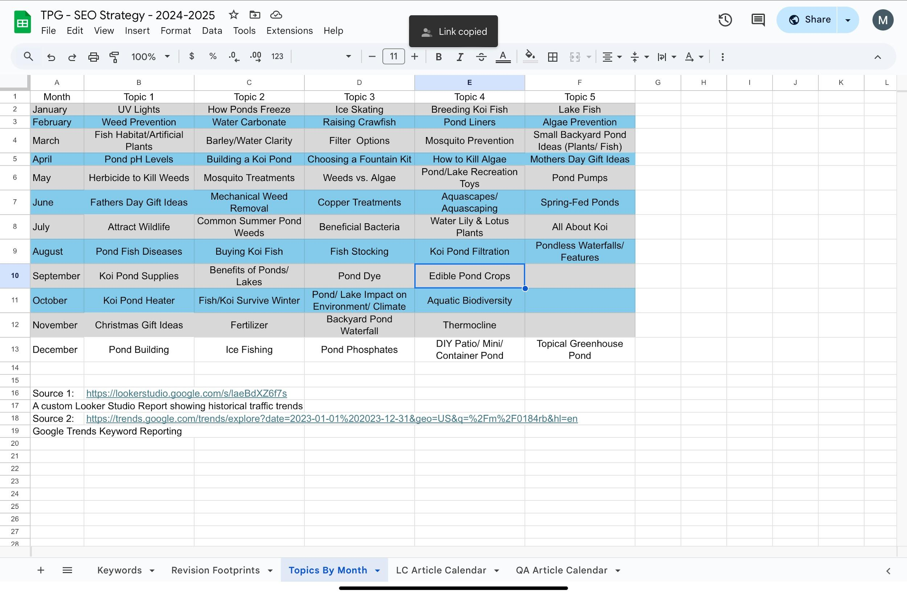
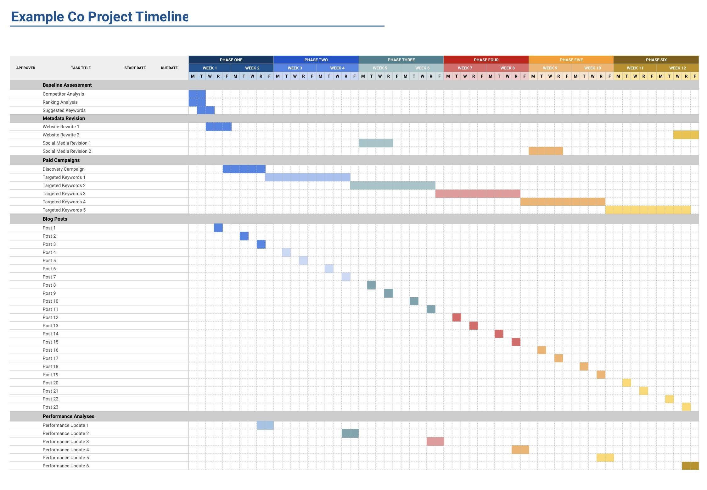
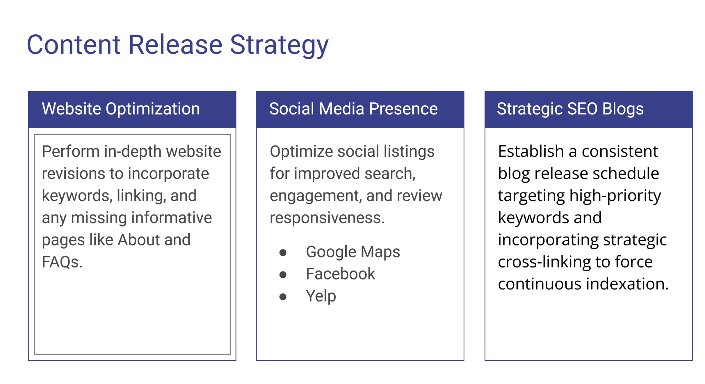
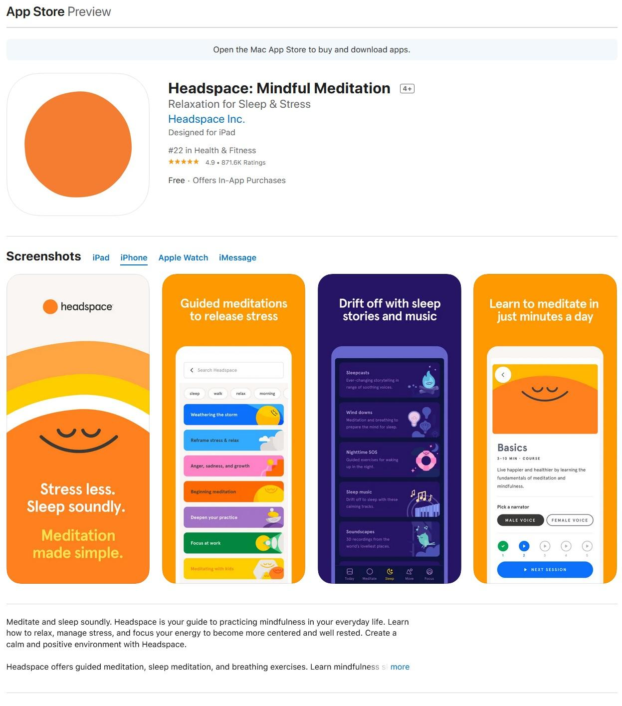
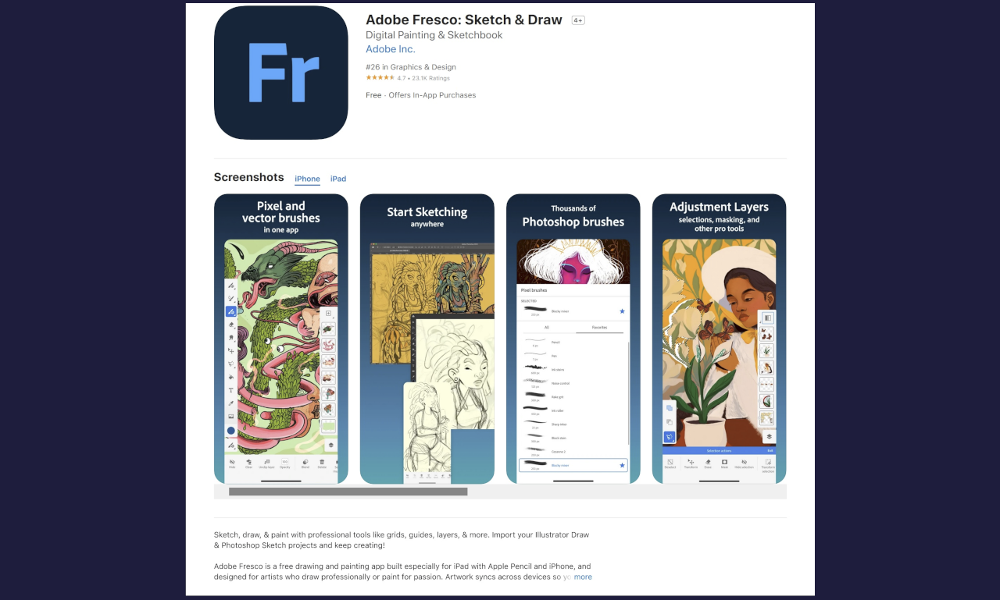

Project Deliverables & Reports
A curated selection of timelines, strategy decks, and performance reports showcasing SEO, ASO, and content campaigns. All links open in new tabs.
Featured Case Study
Stabilizing Seasonal SEO & Scaling AI Visibility
Led a full-funnel SEO + AEO strategy to eliminate seasonal keyword volatility and build compounding organic growth across traditional search and LLM-driven discovery.
+55%
Top 50 Keywords
+23%
Top 3 Rankings
+574%
AI Overviews Visibility
+49%
SERP Features
#1
ChatGPT Sentiment
By replacing campaign-based SEO with a persistent topical authority model, I transformed cyclical performance into sustained growth—removing slow-season drop-offs and accelerating keyword expansion from 3% to 55% post-strategy deployment.
Focus: Content strategy, technical SEO, AEO optimization, keyword stabilization, AI discoverability
View Full Case Study



2022 ASO Campaign for Headspace (Gummicube)

2021 ASO Campaign for Adobe Fresco (Gummicube)